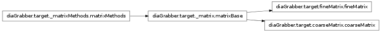
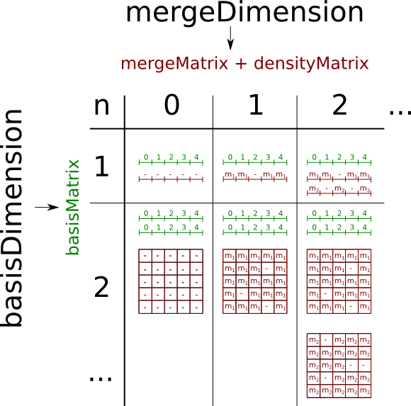

Baseclasses for Targets¶

Baseclass for all matrices¶
- class diaGrabber.target._matrix.matrixBase(sourceClassList)¶
Bases: diaGrabber.target._matrixMethods.matrixMethods
Parameters: sourceClassList (tuple, list) – One or more instances of source-classes Base-Class for all matix-like-targets. Includes every method that is equal for them.
Using more source-classes can be usefull to:
- combine (same merge-dimensions)
- compare (different merge-dimensions)
values. When more sources are used each source has to have the same basis (with same names and units) Different ranges and resolutions will be fitted. If different sources includes mergeDimensions of the same name (and unit) their values are assembled. Depending on the number of used basis- and mergeDimensions all matrix-targets create three different matrices:
- basisMatrix (1D-numpy.array)
- mergeMatrix (nD-numpy.array)
- densityMatrix (nD-numpy.array)
...
- _assign(sourceClass, merge_to_matrix)¶
Assign all self.merge_values to the self.mergeMatrix Get the position/intensity of a value
- _buildMatrices()¶
create:
- mergeMatrix - a list of nD-arrays containing nan (later overridden bymerge-values
- densityMatrix - a list of nD-arrays containing the number of overridden-merge-values
- basisMatrix - a list of 1D-arrays containing th range of all basis-values
- _checkMinMax()¶
get minMax-range for all unlimited dimensions
- _combineMergeDims()¶
- _fill(readout_one_line, end_readOut)¶
Intrinsic method to readout all sources and to fill the matrix.
- _fitBasisDims()¶
- _getReadoutEveryNLine()¶
because every source-file has a identically value for it we can take the first one
- _prepareFill()¶
- _setReadoutEveryNLine(readoutEveryNLine)¶
Try to set the value _readout_every_n_line in every given source-class. If a source-class donst has this attribute, restore the original value.
- fill()¶
Readout the whole source, then continue.
- fillInteractive(plotInstance, **kwargs)¶
Fill the matrix with the source-values and plot the progress. Therefore a plotInstance which is able to plot interactive is needed. kwargs can be those from the plot-method of the used ‘plotInstance’
- load(name, folder='', ftype='bin')¶
Load previous saved matrices. Only ftype=’bin’ is supported at the moment.
- save(**kwargs)¶
- Save the following matrices (of all mergeDimensions) to file:
- basisMatrix
- mergeMatrix
- densityMatrix
Required kwargs (“keyword arguments”) are:
Keyword Type Example Description name string “test” prename of the saved files. Optional kwargs (“keyword arguments”) are:
Keyword Type Default Description folder string “” Name of the folder to save in ftype string “bin” “bin”: output is saved in computer-readable binary-form, “txt”: output is saved in a human-readable-form
{kind=link}
Methods to process filled matrices¶
- class diaGrabber.target._matrixMethods.matrixMethods[source]¶
Bases: object
This class includes a list of methods inherited (and hence callable) by all matrix-like targets.
- _multiDimMeshgrid()[source]¶
like np.meshgrid but can also produce multi-dimensional meshgrids takes list of arrays, where len(list)=nBasis
- autoZoom(**kwargs)[source]¶
Required kwargs (“keyword arguments”) are:
Keyword Type Example Description mergeName str myMergeName the name of the merge-dim to do the method on value float/string max The merge-value to zoom in. Type ‘min’ or ‘max’ to use the equivalent extrem-value in the matrix scale string ‘relative’ OR ‘absolute’ level float 0.3 The relative zoom-level 0.3 means +-30% around the zoom-point Optional kwargs (“keyword arguments”) are:
Keyword Type Default Description basisNames list(basisNames) [{all}] Which basisDimensions get a new scale. operator string “==” The zoom-point is defined as the first point in matrix where a value in “==” (equal), “>” (bigger) etc. than the given value
- copyMerge(presentMergeName, newMergeName)¶
copy an existent mergeDim, including its merge- and densityMatrix return the copied mergeDim
- interpolateFast(**kwargs)¶
interpolate NaNs (empty points) in matrix Optional kwargs (“keyword arguments”) are:
Keyword Type Default Description mergeName list(mergeDim) [{all}] one or more merge-dims to do the method on method str ‘nearest’ {“nearest”, “linear”, “cubic”}
- interpolateFine(**kwargs)¶
interpolate NaNs (empty points) in matrix. In contrast to interpolateFast() this function is comparatively slow. Therefore it can take a some minutes to finish interpolation on mergeMatrices that have reslutions > 30 in each basisDimension. However this function enables you to:
- blurring between points (focusExponent). Thus it is possible to get smooth intersections between heavy scattered values.
- extrapolate
- limit the maximum interpolation/extrapolation distance (related to the unit of the chosen basisDimension)
- weight distances in each basisDimension
Optional kwargs (“keyword arguments”) are:
Keyword Type Default Description mergeName list(mergeDim) [{all}] one or more merge-dims to do the method on focusExponent float 10 xxxxx evalPointDensity bool True xxxxxxxx maxDistance dict {None} {basisName:maxDistance,..} distanceFactor dict {1} {basisName:factor,..} \[moment = 1/distance^{focusExponent}\]
- posterize(**kwargs)[source]¶
This method discretize/posterize the values in the mergeMatrix (of a given mergeDimension) to a given ammount of values (e.g. nValues= 4 ) or to a given list or values (e.g. values = [1,2,4])
Optional kwargs (“keyword arguments”) are:
Keyword Type Default Description mergeName list(mergeNames) [{all}] one or more merge-dims to do the method on nValues int 5 the ammount of different values values list None given different values
- transformDim(**kwargs)[source]¶
Keyword Type Default Description mergeName list(mergeDim) [{all}] one or more merge-dims to do the method on rebuildMatrix bool False xxxxxxxxxx